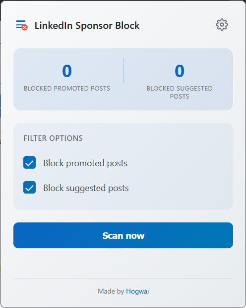
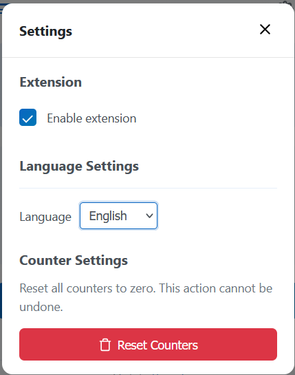
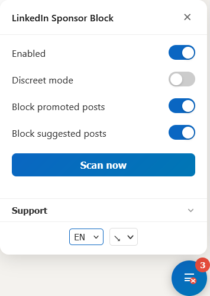

Linkedin Sponsor Block
The free ad blocker for Linkedin. Remove promoted posts, sponsored content, and suggested posts from your feed.
Tired of Linkedin ads, promoted posts, and sponsored content cluttering your feed? Linkedin Sponsor Block is a lightweight ad blocker that automatically hides them, giving you a cleaner, ad-free Linkedin experience.
Also available for all Chromium-based browsers via the Chrome Web Store:
Features
Automatic removal
Hides sponsored posts, suggested content, and partner promotions silently.
Desktop & mobile
Works on both desktop and mobile versions of Linkedin (Firefox & userscript).
Multilingual support
Works with all languages available on Linkedin. Detection is language-agnostic.
Localized UI
Extension interface available in English and French.
Lightweight & discreet
Runs in the background without slowing your browsing experience.
Counter tracking
See how many sponsored posts have been blocked in real time.
Customizable filters
Choose what to block: promoted, suggested, or both.
How it works
Install the extension or userscript
Available on the Chrome Web Store, Firefox Add-ons, or as a Tampermonkey userscript. One click to install, no configuration required.
Browse Linkedin as usual
The extension runs in the background, continuously scanning your feed as new posts load. It detects sponsored posts, suggested content, and partner promotions using Linkedin's own markup.
Unwanted content is hidden instantly
Matching posts are removed from the DOM before you ever see them. A real-time counter tracks how many posts have been blocked during your session.
Frequently asked questions
How do I block ads on Linkedin?
Install Linkedin Sponsor Block from the Chrome Web Store, Firefox Add-ons, or as a userscript. Once installed, it automatically detects and removes promoted posts, sponsored content, and suggested posts from your Linkedin feed. No configuration needed.
How to remove promoted posts from Linkedin?
Linkedin doesn't offer a built-in way to permanently remove promoted posts from your feed. Linkedin Sponsor Block solves this by automatically hiding all promoted and sponsored posts as they appear. It works in real time, so new promoted posts are removed before you even see them.
Does it work with Linkedin Premium?
Yes. Linkedin Sponsor Block works the same way regardless of your Linkedin subscription. It removes sponsored and suggested content from both free and Premium feeds.
Is my data safe?
Absolutely. The extension runs entirely locally in your browser. It does not collect, transmit, or store any personal data. The source code is fully open source and auditable on GitHub.
Does it work in languages other than English?
Yes. The detection engine is language-agnostic and works with all languages supported by Linkedin.
Can I choose what types of content to block?
Yes. You can independently toggle blocking for promoted posts and suggested content in the extension settings. This lets you keep the types of content you find useful.
Does it work on mobile?
Yes. The Firefox extension and userscript (via Tampermonkey) both support Linkedin's mobile web version. Promoted and suggested posts are detected and hidden on mobile just like on desktop.
What if Linkedin changes its layout?
The extension uses a robust detection approach based on Linkedin's internal markup rather than fragile CSS selectors. It is actively maintained and updated when changes occur. If something breaks, .
Preview

Extension popup

Settings

Userscript panel